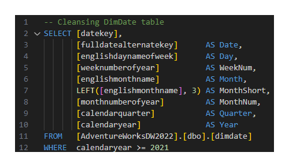
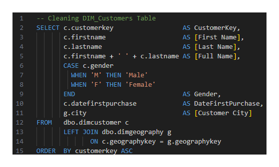
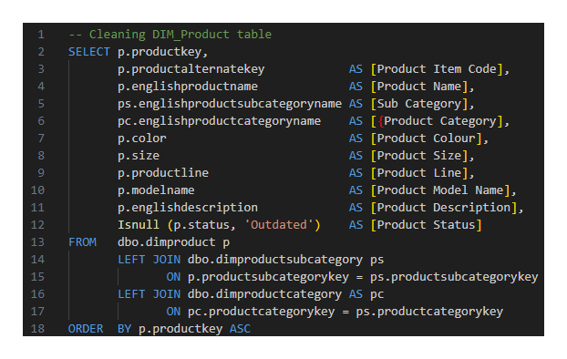
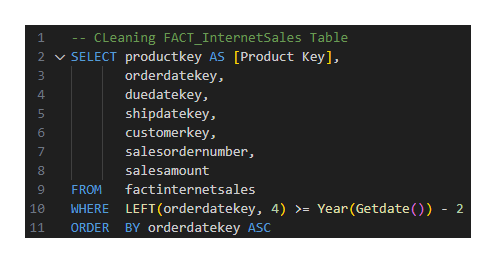

Data Analyst Project: Sales Management

Overview
In this project, I used Microsoft's AdventureWorks sample databases to create a dashboard that will answer the following questions:
- Determine which products sell the best
- Determine which customers buy the most
- Follow sales over time against a budget
- Show a heatmap of customers based on their city
Throughout the project, the following skills and techniques were demonstrated:
- Data Acquisition
- Data Cleansing
- Data Wrangling
- Data Visualisation
- Descriptive Analytics
- SQL
- Power BI
Data Cleansing & Transformation Using SQL
I started the data preparation phase by cleansing and transforming the data using SQL. This step is a crucial part of the process as it can ensure the accuracy and reliability of visualisations and analytics. Below are the SQL statements I used to clean and transform the data:
DIM_Calendar
DIM_Customers
DIM_Products
FACT_InternetSales
Data Model
After cleaning and transforming the data. I joined all of the relevant tables in a star schema. Below is a screenshot of the data model in PowerBI:

Dashboard

The final dashboard includes the following features:
- Visualisations showing the comparison between sales and the budget
- A visualisation showing the top 10 customers
- A visualisation showing the top 10 selling products
- A map showing the the number of sales by city
- Filters for: year, month, city, category, subcatergory and product name
When creating the dasboard, the following techniques were also used:
- Importing data using PowerQuery
- Creating calculated measures
- Adjusting the data category for certain columns
- Creating a measure table
- Importing and adding custom visuals to the dashboard
Conclusions
After visualising the data, descriptive analytics can be performed to identify the following conclusions:
- The bike category sells the most
Using the information from this dasboard, we can now answer the following questions given the data:
- Who the top 10 customers are
- What the top 10 products are
- What products we can sell to certain people
- Which locations are selling the most
- What sales could look like in the future